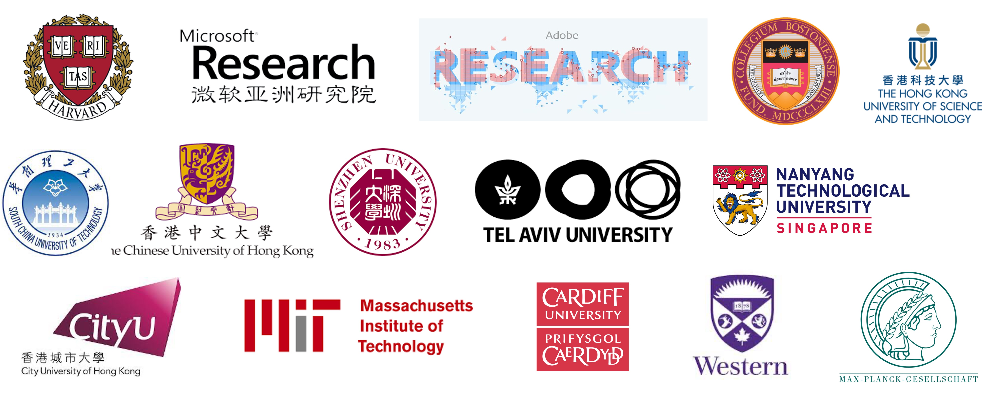

I am a Research Scientist at Adobe Research. I was previously an Assistant Professor in the Department of Computer Science, University of Bath, and fortunate to work as a Postdoctoral Researcher at MMLab@The Chinese University of Hong Kong, advised by Prof. Dahua Lin. I received my Ph.D. degree from the Department of Computer Science, City University of Hong Kong under the supervision of Prof. Rynson W.H. Lau. During my Ph.D. study, I was lucky to be a visiting scholar at VCG@Harvard University under the supervision of Prof. Hanspeter Pfister, and closely collaborated with Zoya Bylinskii from Adobe Research. I was also lucky to work with Steve Lin and Zhirong Wu as an intern at Microsoft Research Asia (MSRA).
My research lies in the areas of computer graphics, computer vision/machine learning, and human-computer interaction.
Recently I am interested in unsupervised learning and data-driven graphic design with minimal annotated data. I am also interested in content generation and manipulation.
We are actively looking for research interns. If you are interested in doing research project(s) at Adobe or remote collaboration with me, please drop me an email with your CV.
FashionTex: Controllable Virtual Try-on with Text and Texture
Anran Lin, Nanxuan Zhao, Shuliang Ning, Yuda Qiu, Baoyuan Wang, Xiaoguang Han
SIGGRAPH 2023
arXiv

Neural Preset for Color Style Transfer
Zhanghan Ke, Yuhao Liu, Lei Zhu, Nanxuan Zhao, Rynson W.H. Lau
Computer Vision and Pattern Recognition (CVPR), 2023
arXiv Project Code Online Demo IOS App


-
